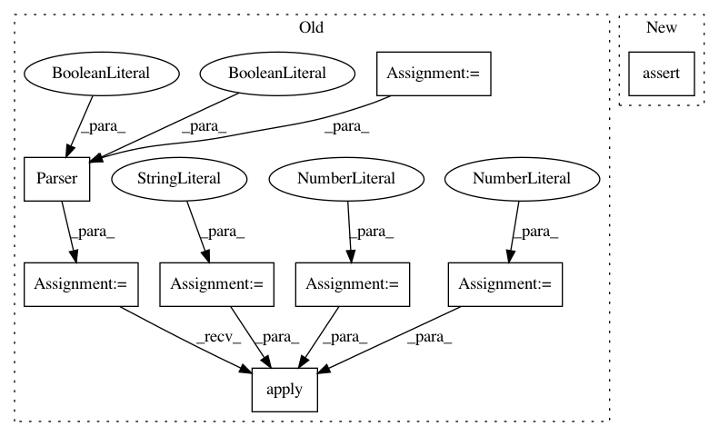

5d4a480c48a242c1d8051be502ecb98a9b273e9c,tests/candidates/test_candidates.py,,test_ngram_split,#Any#,33
Before Change
def test_ngram_split(caplog):
Test extracting candidates from mentions from documents.
caplog.set_level(logging.INFO)
PARALLEL = 1
max_docs = 1
session = Meta.init("postgres://localhost:5432/" + DB).Session()
docs_path = "tests/data/html/112823.html"
pdf_path = "tests/data/pdf/112823.pdf"
// Parsing
logger.info("Parsing...")
doc_preprocessor = HTMLDocPreprocessor(docs_path, max_docs=max_docs)
corpus_parser = Parser(
structural=True, lingual=True, visual=True, pdf_path=pdf_path
)
corpus_parser.apply(doc_preprocessor, parallelism=PARALLEL)
assert session.query(Document).count() == max_docs
assert session.query(Sentence).count() == 828
sents = session.query(Sentence).all()
// Doesn"t matter which sentence we grab, since we are overwriting the
After Change
assert len(result) == 2
assert result[0].get_span() == "New-"
assert result[1].get_span() == "New"
// When a text starts with a split_token.
sent.text = "-Text"
sent.words = ["-Text"]
In pattern: SUPERPATTERN
Frequency: 3
Non-data size: 8
Instances
Project Name: HazyResearch/fonduer
Commit Name: 5d4a480c48a242c1d8051be502ecb98a9b273e9c
Time: 2018-08-21
Author: hiromu.hota@hal.hitachi.com
File Name: tests/candidates/test_candidates.py
Class Name:
Method Name: test_ngram_split
Project Name: HazyResearch/fonduer
Commit Name: 3252f2117a4b693ca001613b13c28cc2d8cd9eb7
Time: 2020-02-14
Author: hiromu.hota@hal.hitachi.com
File Name: tests/candidates/test_candidates.py
Class Name:
Method Name: test_multimodal_cand
Project Name: HazyResearch/fonduer
Commit Name: 3252f2117a4b693ca001613b13c28cc2d8cd9eb7
Time: 2020-02-14
Author: hiromu.hota@hal.hitachi.com
File Name: tests/candidates/test_candidates.py
Class Name:
Method Name: test_ngrams